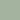

Montreux - Balade dans la vieille ville
Recentrer la carte

| Autoroutes |
|---|---|
| Routes | |

| Chemin de fer |
| Bâtiments | |
|  | Forêts |
Le parcours
Cet itinéraire vous fera parcourir et admirer en quelques étapes les curiosités principales de la vieille ville de Montreux ainsi que de somptueux panoramas donnant sur le lac Léman et les Alpes.
| Poste 1 | Poste 4 |
|---|---|
| Poste 2 | Poste 5 |
| Poste 3 | Poste 6 |